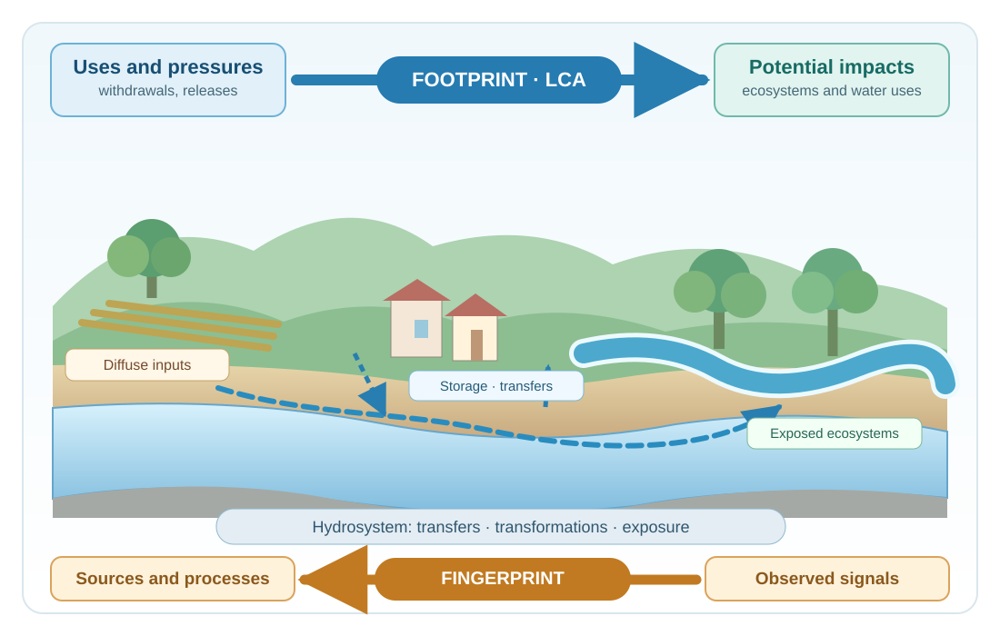
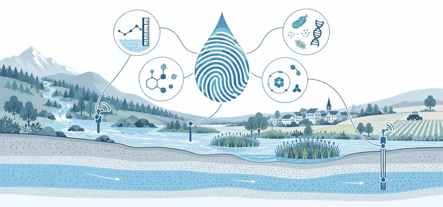

Transfers and connectivity
Surface and subsurface pathways determine where and when a pressure reaches a receiving environment.
A water footprint seeks to characterise how human activities affect water resources and aquatic environments. Yet a withdrawal or discharge does not, in itself, define an impact: the consequences depend on how the hydrosystem transports, stores and transforms pressures. This link between activities, environmental functioning and effects is central to PC4 of the OneWater research programme.
Life-cycle assessment (LCA) methods, including approaches under ISO 14046, go beyond volumes withdrawn or consumed to assess potential impacts of water use. They provide common frameworks for comparing products, activities and territories. However, the same pressure can have very different consequences depending on season, actual water availability, groundwater–river exchanges and ecosystem vulnerability.
The aim is not to replace existing indicators, but to identify which hydrological and environmental information materially changes their interpretation. Representations should be as general as possible and as context-specific as necessary.
A footprint starts from activities and their pressures to estimate potential or contextualised impacts. A fingerprint starts from signatures observed in the environment — tracers, contaminants, chemical and biological signals — to characterise its state and help trace the processes and sources that shaped it.
Both perspectives meet in the functioning of the hydrosystem: sources → transfers and transformations → exposure → effects. Confronting observations with models helps relate estimated impacts to measured effects, without conflating the two.

Surface and subsurface pathways determine where and when a pressure reaches a receiving environment.
Transit times can delay the response to changes in water uses by years or longer.
Biogeochemical reactions, dilution, bioavailability and ecological vulnerability modulate exposures and consequences.
Targeted Project 4, “Water Footprint & Sentinel Water”, of OneWater – Water as a Common Good connects water-footprint and LCA frameworks with sentinel indicators, observations and models of socio-hydrological systems. It aims to support interpretable, context-aware environmental assessment and water management.
PC4 scientific coordination: Jean-Raynald de Dreuzy and Hélène Budzinski (University of Bordeaux).
Co-leadership of Challenge 2, “Water Footprint”: Jean-Raynald de Dreuzy and Hélène Fenet (University of Montpellier).

My work focuses on the role of groundwater flow, residence times and exchanges between water compartments in transforming pressures. The aim is to connect field observations and hydro(geo)logical models to water-footprint indicators, while identifying what can be transferred from one catchment to another.